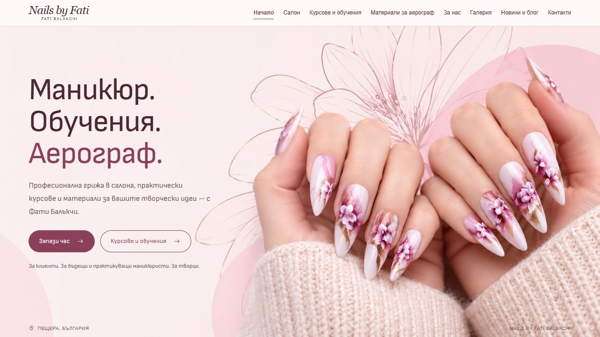
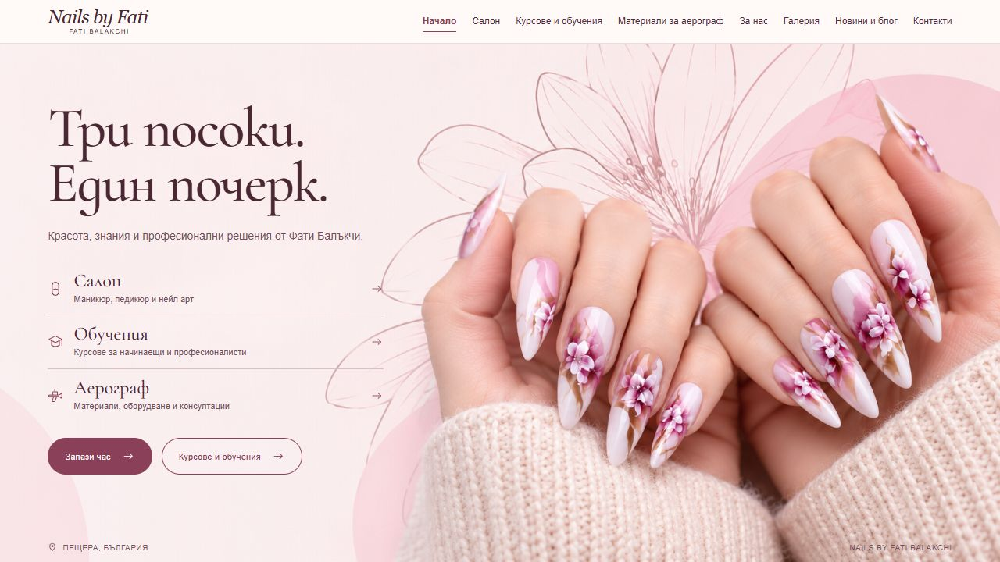
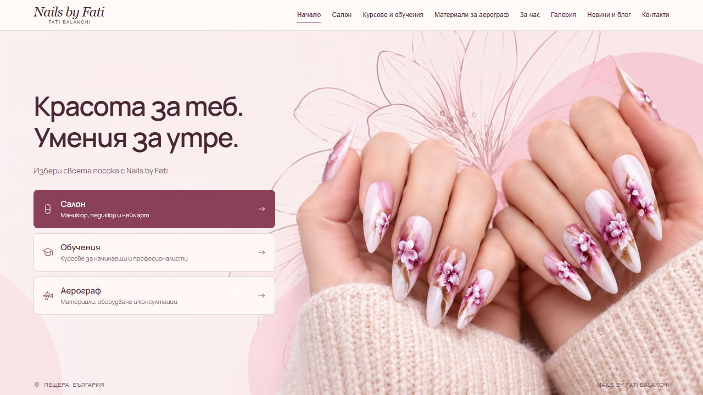
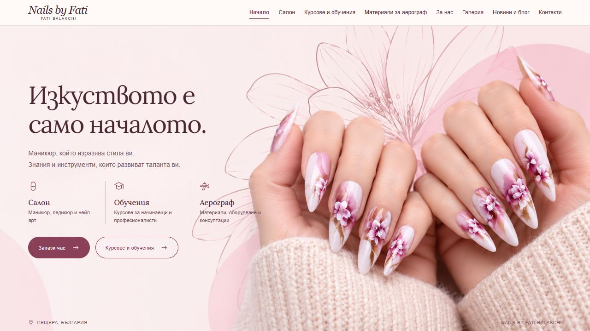
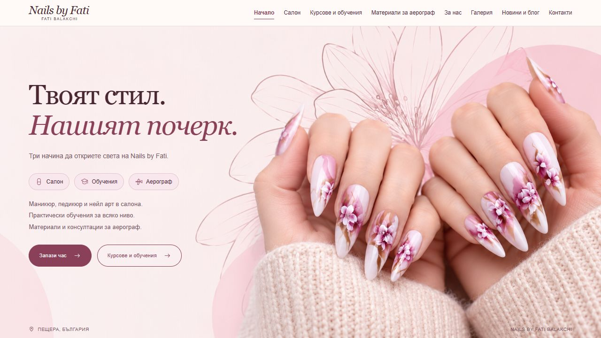

1. Clear & Direct
Open full page ↗Font: Sofia Sans — rounded and contemporary
Services: Three services named directly in the headline.
The compact Porcelain header and your nail image stay in place.
Mix the parts you like: choose a font from one option, a service layout from another, and the wording you prefer.
These choices are a shortlist for our next revision; they do not change your landing page.

Font: Sofia Sans — rounded and contemporary
Services: Three services named directly in the headline.

Font: Cormorant Garamond — delicate serif
Services: Three separate service rows with descriptions.

Font: Manrope — clean and modern
Services: Three large choices, with the salon emphasized.

Font: Lora — warm editorial serif
Services: Three columns: salon, training and airbrush.

Font: Georgia — familiar classic serif
Services: Three service chips with a short explanation underneath.